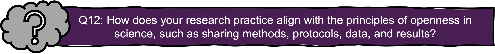
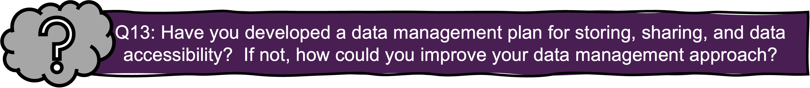

7. GRP and Open Science
Reading time: 7 min Reflection question #: 12,13
Why Open Science?
As a researcher, your work contributes to the vast, interconnected world of knowledge. But how valuable is that contribution if your methods, data, and findings remain behind closed doors? Open Science is about sharing—making your research accessible, transparent, and reusable.
By openly sharing methods, protocols, data, results, publications, and educational materials, you can:
- Enhance research quality – Open scrutiny helps reduce errors and strengthens scientific rigor.
- Build public trust – Transparency fosters accountability and confidence in scientific findings.
- Minimize publication bias – Avoid selective reporting and unnecessary duplication of studies.
- Enable better collaboration – Open access to resources leads to more efficient, impactful research.
For these reasons, GRP encourages you to share as much insight into your work as possible. However, openness must be balanced with responsibility. This principle is summed up as:
“As open as possible, as closed as necessary.”

Public Access to Research: “Allmän handling”
In Sweden, research transparency isn’t just an ethical choice — it’s a legal obligation. The Freedom of the Press Ordinance (1949:105) (‘Tryckfrihetsförordning’), guarantees the public’s (‘allmänhetens’) right to access government documents (‘allmänna handlingar’), including those held by universities and research institutions.
This means:
📂 Most research documents are public – Meeting minutes, databases, email correspondence, and research protocols can be requested by anyone.
🙋 Anyone can request access – A requester does not have to provide a reason and can remain anonymous.
⚖️ Authorities must justify restrictions – If access is denied, the decision can be challenged in the Court of Appeal (‘Hovrätt’).
📜 Under the Archives Act (1990:782 ‘Arkivlag’), public research documents must be preserved and maintained for future legal, scientific, and historical purposes.
The right to access public documents can only be limited by the Public Access and Secrecy Act (2009:400 ‘Offentlighets- och sekretesslag’), which outlines what information must be kept confidential and is not available to the public, even upon request.
Data Sharing: The Heart of Open Science
Data is the foundation of research, but without access, its potential remains untapped. That’s why data sharing is a core principle of Open Science. In Sweden, Act 2022:818 (On the public sector’s access to data (‘Om den offentliga sektorns tillgängliggörande av data’)) encourages the public sector —including universities— to make research data as openly available as possible. To maximize the impact of your data, you should follow the FAIR principles:
- Findable – Clearly documented and easy to locate
- Accessible – Available through standardized protocols
- Interoperable – Compatible with other data formats and systems
- Reusable – Well-described so others can validate and build upon it
To support you in this process, the Swedish Research Council provides guidelines for FAIR data management, as well as a template for the creation of data management plans.

Balancing Openness with Protection
While openness is crucial, you also have a duty to protect sensitive information. The Public Access and Secrecy Act (2009:400) limits how universities and researchers can share data to ensure:
- Confidentiality – Protecting personal data and sensitive research topics
- Legal compliance – Following ethical guidelines and applicable laws
- Risk mitigation – Balancing transparency with security
When full data sharing isn’t possible, GRP recommends alternative approaches:
- Sharing metadata only – Providing descriptions without releasing the data itself
- Releasing partial datasets – Sharing non-sensitive sections of the data
- Anonymizing sensitive data – Removing identifiable details while maintaining usability
If data must remain confidential, it should be securely stored and made available only upon request—after a confidentiality review if needed.
Additionally, some data is exempt from open access, including:
- Data protected under intellectual property laws, such as Patent Law (1967:837)
- Data owned by third parties and protected by Copyright Law (1960:729).
Open Science isn’t just a trend—it’s a movement shaping the future of research, deeply rooted in GRP. As a researcher, you play a key role in upholding GRP by fostering transparency, collaboration, and integrity in your work.